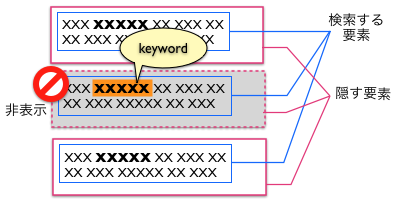

キーワードの含まれる「隠す要素」がフィルタの対象となります。 さらに厳密な設定を行いたい場合は、キーワードに加えて「検索範囲」を指定してください。「検索範囲」にキーワードが含まれていた場合にのみ、フィルタが発動するようになります。

キーワードの判定方法には「単純一致」と「正規表現に一致」の2種類があります。 「正規表現」チェックボックスにチェックを入れない場合、単純にその文字列が含まれるかどうかがチェックされます。 一方、チェックが入っている場合は、その正規表現に一致するかどうかがチェックされます。 「単純一致」のキーワードは青、「正規表現に一致」のキーワードは赤で表示されます。
キーワードを削除するには、右端の[x]ボタンをクリックします。